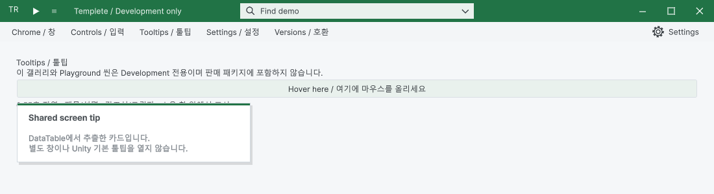
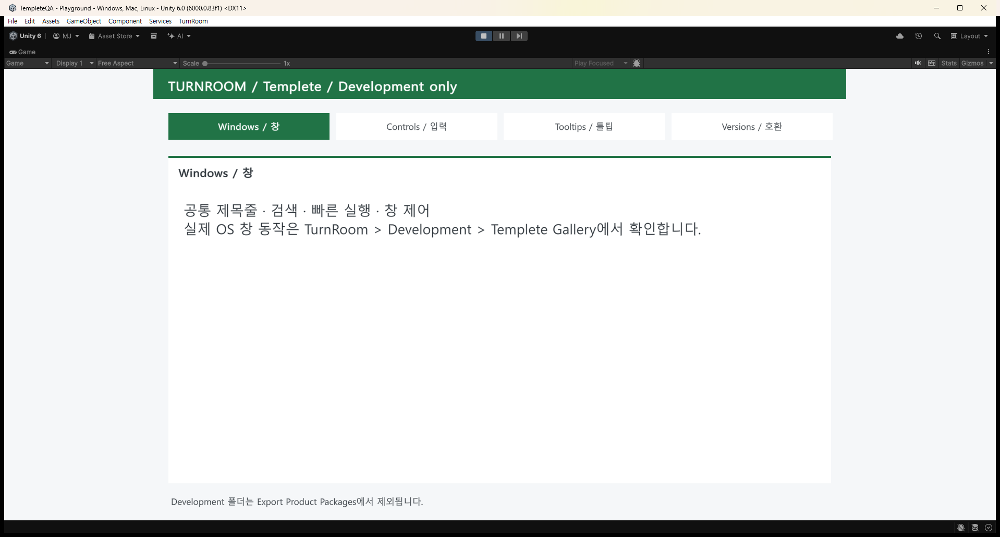

Tracefolio REPORTS & ISSUES
Tracefolio REPORTS & ISSUESTemplete를 두 제품의 UI 모체로 분리
완료Pixora·DesignDataTable과 같은 선상에 Templete를 두고 실제 공통 창 모체, 버전 보호와 개발 전용 갤러리를 구성했습니다. 소비자 패키지의 개발 UI 제외와 설치 순서를 검증했습니다.
작업 결과
Templete를 두 제품의 실제 UI 모체로 분리하고 구현·실행·패키지 검증을 완료했습니다.

Assets/TurnRoom 아래의 DesignDataTable · Pixora · Templete가 같은 선상의 폴더입니다. TemplateWindow가 제목줄 조립을 소유하고 ToolWindow가 창 ID와 공통 목록 계약을 추가합니다. 두 제품은 기능과 명령만 제공합니다.
변경 내용
적용 내용
Templete/Editor에는 창·배치·버전 보호, Runtime에는 카드 렌더러·예제 UI, Development에는 갤러리·Playground·내보내기 도구를 배치했습니다. 기존 TurnRoom.Editor 어셈블리·네임스페이스와 기존 공유 GUID 19개를 보존했습니다.
공통 DefaultUITemplate.asset의 크기·글자·색상을 두 제품이 사용합니다. DataTable은 기존 엔진의 어댑터를 유지하고 Pixora는 같은 모체와 공통 부품을 사용합니다.
API 1 / Templete 1.1.0 계약과 제품별 최소 버전을 선언했습니다. 공식 설치기는 오래된 공유 파일을 제외하고 다른 API 주 버전은 가져오기 전에 차단합니다. Unity 기본 가져오기는 호환 템플릿 다운그레이드와 사용자 공통 설정을 보호합니다.
검증
- 1.0/1.1 버전 픽스처의 양방향 설치, 구버전 직접 가져오기, 사용자 설정 37·39 유지, 다른 API 차단을 실행했습니다. 픽스처는 과거 판매 릴리스라는 뜻이 아닙니다.
- 최종 패키지에서 두 제품의 TemplateWindow 상속, 샘플 제거·재설치, Common→Templete 자동 이전과 GUID 보존을 확인했습니다.
- 실제 패키지의 현재 소스 일치·경로·Development 제외를 검사했습니다. Pixora 패키지에는 실제 예제 씬 10개가 포함됩니다. 갤러리·Playground·내보내기 메뉴는 소비자 패키지에 없습니다.
- 에셋 GUID 3,403개에서 중복과 메타 누락이 없었습니다.
- 실제 갤러리와 Playground Play 화면, 공통 툴팁과 최소화·목록 복원을 확인했습니다.
- 캡처 32개는 무손실 픽셀 일치로 압축했으며 최대 54,612바이트입니다.

패키지 감사·해시 · 이번 QA 요약 · 모체 구조·실행·설치 계약
프로젝트 코드는 codex/turnroom-integration 브랜치의 e791f141aef5a82d08175ebf0791475f46bafc50에 푸시했습니다. 사용자 프로젝트 설정·IDE 파일과 생성 가능한 패키지 바이너리는 커밋에 포함하지 않았습니다. 패키지는 로컬 Artifacts/TurnRoomPackages에 있습니다.
남은 사항
호환 범위는 선언된 API 1.x와 요구 최소 버전 안입니다. 서로 다른 미래 주 버전의 자동 호환을 보장하지 않습니다. 다른 OS·Unity 버전·독립 플레이어 빌드와 스토어 게시 업데이트는 미실행입니다. DataTable의 기존 문서 해시 오류 206건은 해당 프로젝트 보고서에서 별도 공개합니다.
작업 시간
- 제안 시간: 90–150분. 세 프로젝트를 함께 수행한 통합 작업의 시작 시 제안 시간입니다.
- 실제로 완료된 시간: 통합 구현·검증·프로젝트 푸시·보고서 작성: 2시간 24분 39초. 시작 2026-10-30 14:32:14 KST, 결과 기록 완료 2026-10-30 16:56:54 KST (UTC+09:00). 보고서 공개 게시 확인은 이 기록 생성 이후 별도로 수행합니다.
- XERJ: 사용 — SpreadsheetScreenTip 검색 후보를 활용했습니다. Templete 새 인덱스는 frozen mapping identity 오류로 갱신에 실패해 현재 모체 소스는 rg와 실제 실행으로 대조했습니다. 자동 갱신 활성 여부는 검증하지 않았습니다.